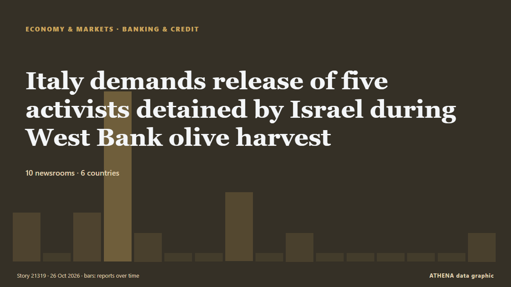

Italy demands release of five activists detained by Israel during West Bank olive harvest

(ANSA) - ROME, 22 OTT - The Italian Ministry of Foreign Affairs has taken action to obtain information regarding the detention of several female Italian activists in the village of al-Bweib, south of… de ANSA English
Relayé de façon indépendante par 10 médias dans 6 pays depuis le 22 oct. ; premier à l'annoncer : ANSA English ; la couverture faiblit. ATHENA juge le risque faible (1.2/10), surtout en raison de la gravité des dommages décrits et de sa portée géographique et sectorielle. La confiance est de 87 % (élevée) : 10 médias indépendants le confirment, avec une fiabilité moyenne des sources de 78 %. Qui l'a rapporté : 6 médias en Italie · Italy, 2 médias en Irlande · Ireland, 2 médias en Singapour · Singapore. La couverture s'est étendue de 22 oct. à 26 oct., sur 95 heures.
Pourquoi c'est important: Ce suivi couvre le conflit qui concerne Israël, Gaza, la Cisjordanie et le Liban — faits militaires, situation humanitaire et diplomatie — tel que le couvre la presse du monde entier.
Ce qui a changé : 1 nouvel article dans les 24 heures jusqu'au 26 oct..
Les titres sont affichés en anglais, tels que publiés.
En un coup d'œil
Sélectionné, noté et rédigé par la méthodologie publiée d'ATHENA. Aucun rédacteur n'intervient sur un événement en particulier. Comment il est produit ›
| 22 Oct 17:36 UTC | 2 |
|---|---|
| 22 Oct 23:36 UTC | 0 |
| 23 Oct 05:36 UTC | 2 |
| 23 Oct 11:36 UTC | 8 |
| 23 Oct 17:36 UTC | 1 |
| 23 Oct 23:36 UTC | 0 |
| 24 Oct 05:36 UTC | 0 |
| 24 Oct 11:36 UTC | 3 |
| 24 Oct 17:36 UTC | 0 |
| 24 Oct 23:36 UTC | 1 |
| 25 Oct 05:36 UTC | 0 |
| 25 Oct 11:36 UTC | 0 |
| 25 Oct 17:36 UTC | 0 |
| 25 Oct 23:36 UTC | 0 |
| 26 Oct 05:36 UTC | 0 |
| 26 Oct 11:36 UTC | 1 |
| 23 Oct 06:40 UTC | 0.0 |
|---|---|
| 25 Oct 00:49 UTC | 1.6 |
| 26 Oct 16:09 UTC | 1.2 |
Pourquoi ces chiffres
Importance
Risque
Confiance
La couverture : qui l'a annoncé, et quand
titre tel que publié · ouvre l'original- ANSA English · Italie · ItalyForeign Ministry seeks clarification on detention of Italian activists in West Bank
- ANSA English · Italie · ItalyForeign Ministry seeks clarification on detention of Italian activists in West Bank
- ANSA English · Italie · ItalyItalian women detained in West Bank may be expelled on Friday - sources
- ANSA English · Italie · ItalyItalian women detained in West Bank may be expelled on Friday - sources
- ANSA English · Italie · ItalyIsrael's detention of Italian women in West Bank unacceptable says Tajani
- ANSA English · Italie · ItalyIsrael's detention of Italian women in West Bank unacceptable says Tajani
- RTÉ News · Irlande · IrelandIrish man detained in West Bank along with activist group
- The Straits Times · Singapour · SingaporeItaly calls for release of five activists held by Israel in West Bank
- Al-Monitor · États-Unis · United StatesItaly calls for release of five activists held by Israel in West Bank
- Asharq Al-Awsat (English) · Arabie saoudite · Saudi ArabiaItaly Calls for Release of Five Activists Held by Israel in West Bank
- Middle East Eye · INTItaly demands release of five activists detained by Israel during West Bank olive harvest
- Anadolu Agency (English) · Turquie · TurkeyItaly demands release of 5 women detained by Israeli army in West Bank
- The Irish Times · Irlande · IrelandIrish man (62) detained in West Bank
- The Straits Times · Singapour · SingaporeFive Italian activists held in West Bank have been repatriated, ministry says
- Arab News · Arabie saoudite · Saudi ArabiaFive activists detained in West Bank return to Italy
- The New Arab · INTIsrael detains dozens of Palestinians in West Bank crackdown
- Anadolu Agency (English) · Turquie · TurkeyIsraeli army says it raided 400 sites in West Bank, detained dozens of Palestinians
- The New Arab · INTItalian father, son recall abuse by Israeli forces in West Bank